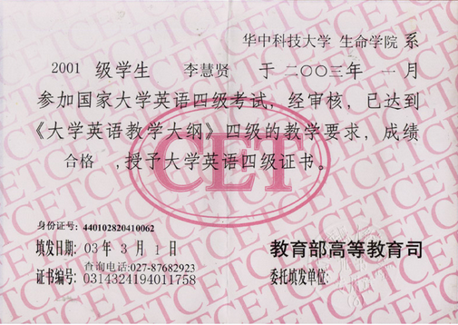

职工服务平台
王思科

欢迎登录
王思科
张三
简历更新日期：2016-3-9 10:47:26
联系电话：XXXXXXXXXXXXXX

男 | 已婚 | 1987年8月生 | 户口：安徽黄山
现居住于江苏无锡 | 工作年限:6年
电子邮箱:zhangsan@qq.com
现居住于江苏无锡 | 工作年限:6年
电子邮箱:zhangsan@qq.com
- 求职意向
-
期望工作性质： 全职 期望从事职业： 软件/互联网开发/系统集成、互联网产品/运营管理、IT质量管理/测试/配置管理 期望从事行业： IT服务(系统/数据/维护)、计算机软件、其他、互联网/电子商务 期望工作地区： 上海 期望月薪： 面议 目前状况： 我目前处于离职状态，可立即上岗 - 自我评价
- 本人乐观，开朗。喜欢动漫，音乐。经过三年的软件学习，学会了学校教授的SQLServer,Access,DB2,c++.net,java,javaEE,安卓。希望可以得到贵公司应聘的机会
- 工作经验
-
2012/03 -- 至今： 无锡太湖云计算中心 | 软件工程师
计算机软件 | 事业单位 | 规模:100-499人 | 6001-8000元/月
2016.02至今 中化化肥b2c 项目 2015.11月至2016.02泰康人寿招采项目
2015.06 至11 味绚 angular.js ionic
2015.02至2015.06 美式保险项目。
2014.11至2015.02梦洁官方商城PC。WAP端设计。切图动态效果实现.网址：www.mengjie.com.cn
2014.09至2014.11中远泛亚电商项目设计。切图。动态效果实现.网址：http://www.epanasia.com/webapp/wcs/stores/servlet/zh-CN/cosco
2014.05至2014.08海尔海外经销商B2B平台PC端设计。切图。前端动态效果实现。移动端设网址：http://www.haierdealer.com/
2013年11月至2014.4,嘉善B2B官网,都市丽人B2B官网项目,切图,前端动态效果实现。
www.goodgooda.com
2013年9月到2013年11月,都市丽人B2C官方商城项目,前端动态效果实现。
http://www.dslrpark.com/
2013年6月到2013年9月，宋河粮液项目设计，切图，前端动态效果实现。
2012年10月到2013年6月参与公司eco项目,前端效果实现。
06月到10月参与公司OA开发。完成OA里面界面设计。切图。(所用技术asp.net)
12年03月到06月熟悉wcs,红豆官方商城，b2b界面切图。
本人熟悉使用DW,PS。会flash.CSS+DIV的书写。兼容各大浏览器.前端Jquery能力良好。能够配合CSS+div完成前端界面的各种效果。熟练使用bootstrap插件。2012/03 -- 至今： 无锡太湖云计算中心 | 软件工程师
计算机软件 | 事业单位 | 规模:100-499人 | 6001-8000元/月
2016.02至今 中化化肥b2c 项目 2015.11月至2016.02泰康人寿招采项目
2015.06 至11 味绚 angular.js ionic
2015.02至2015.06 美式保险项目。
2014.11至2015.02梦洁官方商城PC。WAP端设计。切图动态效果实现.网址：www.mengjie.com.cn
2014.09至2014.11中远泛亚电商项目设计。切图。动态效果实现.网址：http://www.epanasia.com/webapp/wcs/stores/servlet/zh-CN/cosco
2014.05至2014.08海尔海外经销商B2B平台PC端设计。切图。前端动态效果实现。移动端设网址：http://www.haierdealer.com/
2013年11月至2014.4,嘉善B2B官网,都市丽人B2B官网项目,切图,前端动态效果实现。
www.goodgooda.com
2013年9月到2013年11月,都市丽人B2C官方商城项目,前端动态效果实现。
http://www.dslrpark.com/
2013年6月到2013年9月，宋河粮液项目设计，切图，前端动态效果实现。
2012年10月到2013年6月参与公司eco项目,前端效果实现。
06月到10月参与公司OA开发。完成OA里面界面设计。切图。(所用技术asp.net)
12年03月到06月熟悉wcs,红豆官方商城，b2b界面切图。
本人熟悉使用DW,PS。会flash.CSS+DIV的书写。兼容各大浏览器.前端Jquery能力良好。能够配合CSS+div完成前端界面的各种效果。熟练使用bootstrap插件。 - 相关证书
- 1.英语四级证书
2.英语四级证书 - 附件
-
